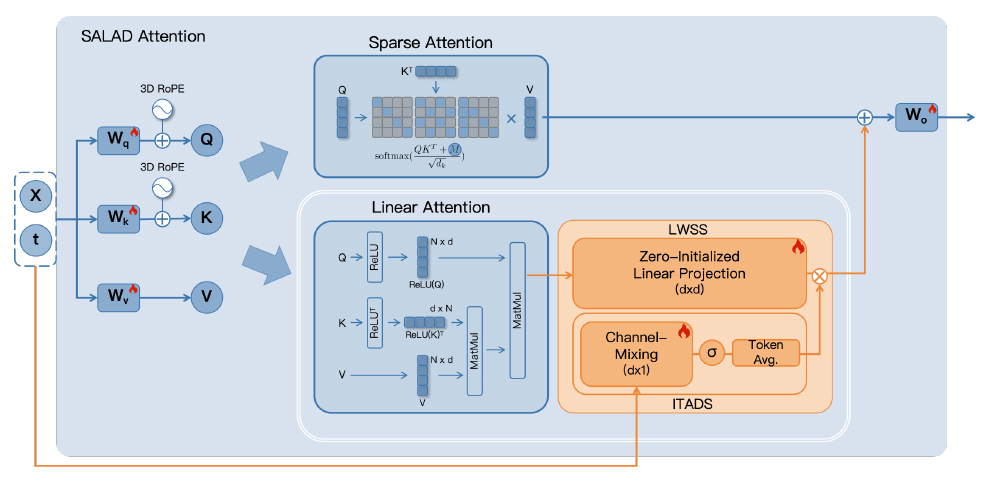
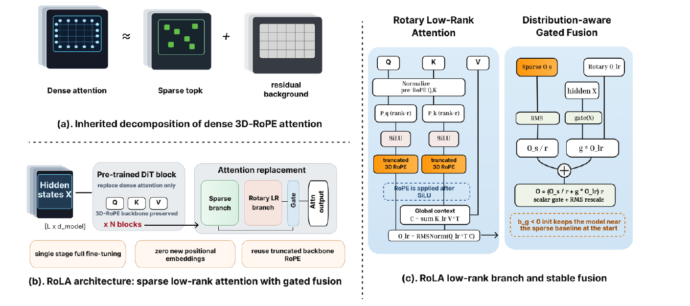

补偿式稀疏注意力：视频扩散的「稀疏分支 + 低秩/线性补偿」家族调研
1. 概述与范围
视频扩散 Transformer（video DiT）在每个采样步都要对整条时空 token 序列做全注意力，序列长度动辄 10 万+，\(O(L^2)\) 的开销随分辨率和帧数爆炸,是端到端延迟的头号来源。加速的一条主线是块稀疏注意力：把注意力矩阵沿 query/key 切块，只精确计算一小部分「高能」块，跳过其余。问题是——朴素稀疏一旦推到很高稀疏度（保留块 < 10%），就会丢掉全局上下文，出现结构崩坏、语义漂移、马赛克化。
补偿式稀疏注意力（compensated sparse attention） 就是对这个失效模式的回应：在稀疏分支旁边并联一条轻量的线性 / 低秩分支，用 \(O(L)\) 的代价把稀疏分支丢掉的全局背景「捞」回来。形式上普遍写成
稀疏分支抓「显著的成对交互」，补偿分支抓「弥散的背景上下文」，一个门控 \(g\)（几乎都初始化成近零）融合两者。这条线在 2025-05 到 2026-09 的一年半里密集成型，本调研覆盖其中 5 篇载重工作 + 若干相邻工作。
这条线的谱系（时间轴 + 分类脊柱）
- 纯可训练块稀疏（无补偿分支） ——
VSA（2505）：确立了「粗选块→细算块」的块稀疏计算范式和硬件高效 kernel，是整个家族复用的地基，但它自己没有线性/低秩补偿分支。 - 统一稀疏-线性（按块路由） ——
SLA（2509）→SLA2（2602）：不并联，而是把每个注意力块三分类，路由到「精确 / 线性 / 丢弃」。 - 并联线性/低秩补偿（本调研的核心语义） ——
SALAD（2601，ReLU 线性分支）→RoPeSLR（2605，低秩 + 可学习 3D PE）→RoLA（2609，秩截断旋转低秩）。这三篇是「稀疏 + 补偿分支」最纯粹的实例。 - 训练无关的补偿 / 稀疏（对照轴） ——
SVG/SVG2（2502/2505）纯 profiling 稀疏、SVG-EAR（2603）无参数质心补偿。不微调，稀疏度和加速都更保守。 - 家族的「诊断者」 —— sparkdiffusion-2026（2609）：直接采用 RoLA 作稀疏模块，但发现补偿家族在 97% 处集体掉进 high-sparsity trap，把问题从架构重新定位到监督。
一个反复出现的关系值得先点破:RoPeSLR、RoLA、SparkDiffusion 出自同一课题组（Kun Yuan 团队，北大 Melon Group + Alibaba），是同一条研究线的三级火箭；而 SLA→SLA2 出自另一条线（Jintao Zhang，清华 thu-ml + Berkeley）。两条线在「RoPE 两难」上给出了互斥的解法（§4）。
验证说明（本调研的铁律）：下列每一个 arxiv 号、年份、稀疏度、加速比、质量分都经过本轮联网核对（✅ 标注）。arxiv 前缀即年月：
2505=2025-05、2509=2025-09、2601=2026-01、2605=2026-05、2609=2026-09。速度数字来自各自论文的自报值，不同工作的硬件 / 骨干 / 稀疏度定义不同，横向不可直接比——§3 的矩阵按「工作自报」列出，§4 明确点出哪些数字不可比。
2. 逐篇精要
2.1 VSA —— 纯可训练块稀疏的地基（无补偿分支）
VSA: Faster Video Diffusion with Trainable Sparse Attention（ICML 2025, arxiv:2505.13389） — ✅ verified
- 核心贡献: 第一个从头训练就可用、且真能兑现墙钟加速的视频 DiT 块稀疏注意力——粗到细两级、单一可微 kernel、无需事后 profiling。
- 方法: 粗阶段把 token 按立方体（cube）池化成 tile 并算 tile 级注意力选出 top-k 关键 cube；细阶段只在选中的 cube 内做 token 级块稀疏注意力；粗输出与细输出各自过门控再相加。
- 关键结果: 训练 FLOPs 降 2.53×（diffusion loss 不掉）；retrofit 到 Wan2.1 注意力提速 6×、端到端 31s→18s；维持 FlashAttention-3 的 85% MFU。
- 代码:
hao-ai-lab/FastVideo—fastvideo/attention/backends/video_sparse_attn.py。

怎么做的：VSA 把长视频 token 按 \((4,4,4)\) 的立方体划分,先在压缩后的 cube 表示上做一次廉价的全注意力(粗阶段),得到每个 cube 的重要性分数;然后 top-k 选出少数关键 cube,细阶段的稀疏注意力只在这些 cube 内按块计算。它的非显然设计有两处:第一,粗/细两条路径都保留并用可学习门控加权求和,粗路径充当一个「永远在线的低分辨率全局通道」,这让 VSA 在极端稀疏下不至于完全瞎——但这条粗通道是池化注意力而非线性注意力,复杂度仍随 cube 数增长,不是真正的 \(O(L)\) 补偿。第二,整个 tile 选择被塞进单个可微 kernel、且严格贴合 FlashAttention 的块计算布局,这是它能把理论 FLOPs 兑现成 85% MFU 真实吞吐的关键——很多稀疏方法的选择逻辑破坏了块连续性,导致理论稀疏但实际不快。VSA 因此成为整个家族的性能地基:后续 SLA/RoLA 的稀疏分支 kernel 都沿用这种块稀疏布局。
2.2 SLA —— 把注意力块「三分类」而非并联
SLA: Beyond Sparsity in Diffusion Transformers via Fine-Tunable Sparse-Linear Attention（arxiv:2509.24006, 2025-09） — ✅ verified
- 核心贡献: 不并联补偿分支,而是把注意力块动态三分类——critical / marginal / negligible——分别用精确、线性、丢弃三种算法处理,一个可微算子里统一,可微调。
- 方法: 用 mean-pooling 预测压缩注意力权重给块打分;top \(k_h\%\) 为 critical 走 \(O(N^2)\) FlashAttention,中间 marginal 走 \(O(Nd^2)\) 线性注意力,底部 \(k_l\%\) negligible 直接跳过;输出 \(O=O^s+\mathrm{Proj}(O^l)\)。
- 关键结果: Wan2.1-1.3B 上注意力计算量降 95%（20× FLOPs）、注意力 kernel 提速 13.7×、端到端 2.2×;只需 2000 步微调(< 0.1% 预训练成本);baseline 在 85-89% 稀疏就掉质量而 SLA 到 95% 仍持平。
- 代码:
thu-ml/SLA—sparse_linear_attention/core.py。

怎么做的：SLA 的出发点是「稀疏注意力扔掉的块并非全无贡献」——真实注意力谱是长尾的:少数块占大部分质量(critical),但中段有一大批各自很小、加起来不可忽略的块(marginal),只有尾部才真正接近零(negligible)。纯稀疏把 marginal 和 negligible 一起扔,于是在高稀疏度崩掉。SLA 的做法是先用 mean-pooling 得到一张低分辨率的块-块注意力图给每块打分,再按两个阈值 \(k_h,k_l\) 把块路由到三条不同复杂度的计算路径,最后线性分支的输出过一个可学习投影 \(\mathrm{Proj}\) 再加到稀疏输出上。非显然的设计取舍:(1) marginal 用线性注意力而非更粗的池化,是因为线性注意力能保留 token 级的 value 加权(只是丢了 softmax 的尖锐性),对「大量小贡献」的求和恰好够用;(2) 三分类的阈值是逐层动态的,不同层稀疏结构不同;(3) 它把「稀疏」和「线性」统一成一个可微算子,微调时梯度能同时流过两条路径,这是它只要 2000 步就能适配的原因。SLA 与并联式补偿(SALAD/RoLA)的本质区别在于:SLA 的线性分支只处理中段的块,而并联式补偿的线性分支覆盖全部 key。
2.3 SALAD —— 并联 ReLU 线性分支,超廉价微调
SALAD: Achieve High-Sparsity Attention via Efficient Linear Attention Tuning for Video Diffusion Transformer（arxiv:2601.16515, 2026-01） — ✅ verified
- 核心贡献: 在稀疏分支旁并联一条 ReLU 线性注意力补偿分支,用「稀疏主导、线性辅助」的标量门 + 零初始化投影,把微调成本压到极低。
- 方法: 共享 Q/K/V/O 投影;线性分支 \(\mathrm{ReLU}(Q)(\mathrm{ReLU}(K)^\top V)\) 带 3D RoPE;输出 \(O=O_s+\bar G\cdot\mathrm{Proj}(O_l)\),其中 \(\bar G\) 是逐 token 门在序列上平均出的标量;只训练线性投影 + 门(+4.99% 参数)。
- 关键结果: Wan2.1-1.3B 上 90% 稀疏 / 1.72× 加速,VBench 全项略高于全注意力(主体一致性 96.54 vs 95.88 等);微调只需 2000 段视频 / 1600 步 / 20.6 GPU 时——比 SLA 的 20000 段 / batch 64 便宜一个量级。
- 代码: 论文未公开仓库(截至核对时)。

怎么做的：SALAD 的核心主张是「补偿只需要很便宜的一点」——预训练稠密模型已经学好了绝大部分,稀疏化只丢了全局背景那一小块,所以补偿分支不该抢戏。它把这个直觉落成两个机制:LWSS(Learnable Weight Static Scaling)是一个零初始化的投影层,意味着微调从纯稀疏注意力启动(线性分支初始贡献为零),训练过程只让它在必要处慢慢长出来;ITADS(Input-and-Timestep-Aware Dynamic Scaling)是一个依赖隐状态和时间步的标量门,在序列维度平均成一个 \([0,1]\) 标量——注意它是逐样本/逐时间步一个标量,而不是逐 token 向量门,这是它比 RoLA 更省的地方(也更粗)。设计取舍:(1) 线性分支用 ReLU 而非 softmax 特征映射,配合 3D RoPE 直接加在 Q/K 上——SALAD 没有深究 RoPE 与非线性的交换问题(见 §4 的 RoPE 两难),而是赌「训练能兜住」;(2) 绝大多数参数共享,只有 +4.99% 可训练,加上零初始化,使得 20.6 GPU 时就能收敛——这是全家族微调成本最低的一篇,代价是它只验证到 90% 稀疏、没碰更极端的区间。
2.4 RoPeSLR —— 命名「RoPE 两难」,用可学习 3D PE 注入救低秩分支
RoPeSLR: 3D RoPE-driven Sparse-LowRank Attention for Efficient Diffusion Transformers（arxiv:2605.20659, 2026-05） — ✅ verified
- 核心贡献: 明确提出 「RoPE 两难」——标准线性注意力破坏 3D RoPE 的相对位置结构,导致补偿分支在极端稀疏下失效;解法是弃用标准线性注意力,改用头级低秩参数化 + 可学习 3D 绝对位置注入来合成长程相对距离衰减。
- 方法: 把注意力分解为「高频语义尖峰集(稀疏,\(O(L^{3/2})\))」+「极低秩背景连续统(\(O(d_h\log L)\))」;低秩分支不做 \(\phi(K)^\top V\) 式线性注意力,而是注入可学习 3D PE 来保住相对位置几何。
- 关键结果: 90% 稀疏;Wan2.1-1.3B 上 最多 10× 更少 FLOPs;HunyuanVideo-13B 上端到端 2.26×;VBench 平均掉 < 1.3%;支持 100K+ token。
- 代码: 论文未见公开仓库。

怎么做的：RoPeSLR 是本家族里第一篇把「为什么补偿分支在视频 DiT 上特别难」讲清楚的工作。症结是 3D RoPE:视频 DiT 靠旋转位置编码给 token 的时空相对位置编码,而线性注意力要复用一个 query 无关的全局摘要 \(C=\sum_j\phi(k_j)v_j^\top\)——问题是当特征映射 \(\phi\) 是逐点非线性时,旋转 \(R\) 和 \(\phi\) 不可交换(\(\phi(Rk)\ne R\phi(k)\)),于是摘要 \(C\) 里烘焙进了每个 key 的绝对位置 \(p_j\),再也无法表达成相对偏移 \(p_i-p_j\) 的函数,相对位置几何丢失。RoPeSLR 的对策是根本不走标准线性注意力:它对低秩背景分支做头级低秩参数化,并显式注入一组可学习的 3D 绝对位置编码,让这条分支自己去学出长程的相对距离衰减规律。设计取舍:这条路不依赖 \(\phi\) 与旋转的交换性(因为压根没用 \(\phi(Rk)\) 那套),代价是引入了可学习 PE 参数、且「合成的相对衰减」是学出来的近似而非几何上精确的相对旋转。它对稀疏/低秩两支的复杂度给了明确的量级(\(O(L^{3/2})\) 尖峰 + \(O(d_h\log L)\) 背景),是家族里理论刻画最细的一篇(其 Algorithm 1 的管线是:3D-PE 注入 → 每头 VMoBA 稀疏分支 + MLP 低秩补偿分支 → RMSNorm + 逐 token 门控融合)。
2.5 RoLA —— 把旋转移到非线性之外,SparkDiffusion 的默认模块
RoLA: Rotary-Positioned Low-Rank Linear Attention for Efficient Diffusion Transformers（arxiv:2609.06712, 2026-09） — ✅ verified
- 核心贡献: 对「RoPE 两难」的第二种解法——保留线性注意力,但把秩截断的 RoPE 旋转放到非线性 \(\phi\) 之后作用在低秩特征上,从而在保住可复用全局摘要的同时恢复相对位置行为,零额外位置参数。
- 方法: \(\tilde q=R_r(p)\odot\mathrm{SiLU}(P_q q^{\text{norm}})\),\(\tilde k=R_r(p)\odot\mathrm{SiLU}(P_k k^{\text{norm}})\),\(C=\sum_j\tilde k_j v_j^\top\),\(O_{lr}=\mathrm{RMSNorm}(\tilde q^\top C)\);逐 token 门 \(O=(O^s/r_p+g_p\odot O^{lr})\times r_p\);\(R_r\) 只旋转前 \(r{=}64\) 维。
- 关键结果: 90% 稀疏;Wan2.1-14B-720P 上 1075.7s→409.3s(2.63×),VBench 主体一致性 0.9629 vs 稠密 0.9698,PSNR 28.65 vs SLA 26.33,LPIPS 0.108 vs SLA 0.124;1.3B-480P 50.9s→21.7s。
- 代码: 无独立仓库,但其实现即
AlibabaResearch/SparkDiffusion的networks/wan_rola_attention.py。

怎么做的：RoLA 和 RoPeSLR 出自同一课题组,面对同一个「RoPE 两难」,却给出了互斥的解法——这本身是本调研最有意思的对照。RoLA 不像 RoPeSLR 那样放弃线性注意力,而是动手术调整算子顺序:标准做法是先旋转再过特征映射 \(\phi(R\,k)\),旋转被困在非线性内部无法分解;RoLA 改成先把 \(q,k\) 从 head_dim 投影到 rank(默认 64),过 SiLU,然后才施加只作用于前 \(r\) 维的秩截断 RoPE \(R_r\)。因为此时旋转是作用在 \(\phi\) 输出之上的线性算子,它能被线性注意力的求和 \(\sum_j\) 分解出去:\(\tilde q_i^\top\tilde k_j=\mathrm{SiLU}(P_q q_i)^\top R_r(p_i)^\top R_r(p_j)\mathrm{SiLU}(P_k k_j)\),而 \(R_r(p_i)^\top R_r(p_j)=R_r(p_j-p_i)\) 只依赖相对偏移——相对位置几何被精确保住,且全局摘要 \(C=\sum_j\tilde k_j v_j^\top\) 仍可跨 query 复用。融合用逐 token 门 \(g_p\),门偏置初始化 \(-1.946\)(\(\sigma\approx0.125\)),用稀疏输出的 RMS \(r_p\) 把补偿量缩放到同量级。设计取舍:相比 RoPeSLR 的可学习 PE,RoLA 零额外位置参数(直接复用预训练旋转调度的一个截断子集),几何上更「干净」,但只旋转前 \(r\) 维意味着低秩瓶颈之外的方向没有位置感知——是一种刻意的近似。RoLA 被 SparkDiffusion 选作默认稀疏模块,也因此成为「high-sparsity trap」诊断的载体。
2.6 相邻工作（不并列,列出以定位边界）
- SLA2（arxiv:2602.12675, 2026-02）✅ —— SLA 的续作:把三分类的阈值换成可学习路由器、稀疏/线性用可学习比例融合,并叠加 QAT 低比特注意力。视频 DiT 上做到 97% 稀疏 / 18.6× 注意力加速。是 SLA 线向「更高稀疏 + 量化」的推进,和 SparkDiffusion 的 FP8 思路在低比特上撞车。
- SVG-EAR（arxiv:2603.08982, ECCV 2026）✅ —— 训练无关的补偿:语义聚类后用质心近似被跳过的块(无参数线性补偿),并用「误差感知路由」按 error-to-cost 比而非注意力质量选块。Wan2.2 / HunyuanVideo 上 1.77× / 1.93×,PSNR 29.759 / 31.043。它证明补偿的直觉在 training-free 设定也成立,但稀疏度和加速比明显保守于需微调的 SALAD/RoLA。
- SVG / SVG2（arxiv:2502.01776 / 2505.18875）✅ —— 训练无关的纯稀疏(非补偿):SVG 按 spatial/temporal head 在线 profiling(CogVideoX/HunyuanVideo 上 2.28×/2.33×),SVG2 用语义聚类 + 排列把关键 token 排成连续块(HunyuanVideo 2.3× / Wan2.1 1.8×)。代码
svg-project/Sparse-VideoGen。它们是「不补偿、纯稀疏 profiling」的对照组。 - sparkdiffusion-2026（arxiv:2609.23153, 2026-09） —— 家族的诊断者与集大成者。直接用 RoLA 作稀疏模块,但发现补偿家族在 97% 处集体失效:step-local 训练损失在降、终端生成质量在崩(high-sparsity trap)。用 oracle 探针定位到「高噪声结构生成阶段」注入误差,证明这是监督问题(step-local 看不见终端可见误差),补救靠 trajectory-mixed 蒸馏而非更强的补偿分支。它把整条补偿线的天花板给标了出来。
3. 平行对比
| 工作 | 年月 | 补偿机制 | 稀疏×补偿关系 | 是否微调 | RoPE 处理 | 稀疏度 | 自报加速 | 骨干/分辨率 | 代码 |
|---|---|---|---|---|---|---|---|---|---|
| VSA | 2505 | 粗池化注意力(非线性/低秩) | 粗+细两级门控 | 从头训练 | 保留原 RoPE | — | 注意力 6×,端到端 31→18s | Wan2.1 | ✅ FastVideo |
| SLA | 2509 | 线性(仅 marginal 块) | 按块三分类路由 | 2000 步微调 | 保留原 RoPE | 95% | 注意力 13.7×,端到端 2.2× | Wan2.1-1.3B | ✅ thu-ml/SLA |
| SLA2 | 2602 | 线性 + 低比特 | 可学习路由 + QAT | 微调 | — | 97% | 注意力 18.6× | Wan 系 | ✅(SLA 仓) |
| SALAD | 2601 | ReLU 线性并联分支 | 全局并联,标量门 | 20.6 GPU时 | 3D RoPE 直接加,靠训练兜 | 90% | 端到端 1.72× | Wan2.1-1.3B | ✗ |
| RoPeSLR | 2605 | 低秩 + 可学习 3D PE 注入 | 全局并联(尖峰+背景) | 微调 | 弃用线性注意力,注入学习 PE | 90% | FLOPs 10×,端到端 2.26× | Wan2.1 / Hunyuan-13B | ✗ |
| RoLA | 2609 | 旋转秩截断低秩线性 | 全局并联,逐 token 门 | 微调 | RoPE 移到非线性之后,零参数 | 90% | 端到端 2.63× | Wan2.1-14B-720P | ✅(SparkDiffusion 仓) |
| SVG-EAR | 2603 | 质心近似(无参数) | 误差感知路由补偿 | 训练无关 | 保留原 RoPE | — | 1.77×/1.93× | Wan2.2 / Hunyuan | ✅(SVG 仓) |
| SVG/SVG2 | 2502/2505 | 无(纯稀疏) | profiling 稀疏 | 训练无关 | 保留原 RoPE | — | 2.3× 级 | CogVideoX/Hunyuan/Wan | ✅ svg-project |
判别性说明:「补偿机制」「稀疏×补偿关系」「RoPE 处理」三列是真正区分这些工作的轴;而「稀疏度」「加速」两列横向不可比(骨干、分辨率、硬件、稀疏度定义各不同——VSA 报注意力提速、RoLA 报 14B-720P 端到端、SALAD 报 1.3B),仅用于看各自量级。空值(—)表示论文未以该口径报告。
4. 一致与矛盾
一致（独立工作的收敛,是强信号）
- 门控普遍近零初始化,「稀疏主导、补偿辅助」是共识。SALAD 用零初始化投影(LWSS)+标量门,RoLA 用偏置 \(-1.946\)(\(\sigma\approx0.125\))的逐 token 门,SLA 的线性分支过可学习投影从小值长起。三家独立落到同一设计:微调必须从「几乎纯稀疏」启动,让补偿分支只在必要处慢慢打开——否则补偿分支会在训练早期干扰已经学好的稠密先验。这种跨独立工作的收敛,比任何单篇的消融都更能说明这是对的。
- 补偿分支覆盖「大量小贡献」而非「漏掉的大头」。SLA 明确区分 critical(大头,精确算)和 marginal(大量小贡献,线性补),SALAD/RoLA 的线性分支同样是补弥散背景。全家族一致认为:稀疏丢的不是几个关键块,而是一片各自很小、加起来不可忽略的背景——这也是为什么线性/低秩(而非再选更多稀疏块)是对的补偿形式。
- 90% 稀疏「近无损」被多篇独立复现。SALAD、RoPeSLR、RoLA、SLA 各自在 Wan 系上报 90% 稀疏、VBench 掉幅 < 1.3% 甚至持平。这个区间的结论是settled 的。
矛盾（点名冲突的数字/主张）
- RoPE 两难的解法互斥,且出自同组。RoPeSLR(2605)判定标准线性注意力不可救,必须弃用、改注入可学习 3D PE;RoLA(2609)偏偏保留线性注意力,只把旋转移到非线性之后就号称解决,且零额外位置参数。两篇同一课题组、相隔 4 个月、对同一问题给出相反的架构选择。可能的调和:RoLA 的「旋转在 \(\phi\) 之后」在数学上确实恢复了相对几何(旋转是可分解的线性算子),几何上比 RoPeSLR 的「学出来的近似衰减」更干净;RoPeSLR 更早、可能在 RoLA 的分解技巧被发现前就绕道了。这是一处真实的技术演进,不是谁错——但两篇论文没有正面互引对比,读者需自己拼。 而 SALAD(2601)更早,干脆没深究交换性,直接加 3D RoPE 靠训练兜——这在 90% 或许够,但在更高稀疏可能正是它没验证极端区间的原因。
- 「近无损」的稀疏度天花板互相打架。SLA(2509)称 95% 稀疏仍持平、baseline 在 85-89% 就崩;SLA2(2602)推到 97%。但 sparkdiffusion-2026(2609,同期,且直接用 RoLA)用 oracle 探针实测:97% 处 step-local 损失照样收敛,但终端视频结构崩坏。这不是数字打架而是口径打架——SLA 系的「持平」多以 VBench/PSNR 等指标衡量单点或短窗,SparkDiffusion 指出这些 step-local / 单步指标看不见沿采样轨迹累积的终端误差。同一稀疏度(97%),一个说「行」一个说「不行」,分歧根源是监督/度量口径:补偿分支修的是「表达能力」,而 97% 的失效是「监督信号」的缺失。这是全调研最重要的矛盾,也是 SparkDiffusion 的核心贡献。
- 加速比不可横向比,却常被并列引用。VSA 的「6×」是注意力 kernel、SLA 的「13.7×」是注意力 kernel、RoLA 的「2.63×」是 14B-720P 端到端、SALAD 的「1.72×」是 1.3B 端到端。把它们放同一句话里比大小是错误的——注意力提速 ≠ 端到端提速(端到端还含 VAE、文本编码器、非注意力层),骨干规模和分辨率也天差地别。
启发（这组工作合起来告诉研究者什么）
补偿式稀疏注意力作为架构手段已经成熟:90% 稀疏近无损是可复现的、门控设计有共识、RoPE 兼容有(至少两种)可行解。但整条线撞到了一个它自己解决不了的天花板——补偿分支能恢复「表达能力」,却不能提供「终端对齐的监督」;95%→97% 的失效,SparkDiffusion 证明是监督问题,要靠蒸馏而非更强的补偿。所以下一步不在补偿分支本身,而在「稀疏架构 × 少步蒸馏」如何联合(见 §6 白地)。
5. 代码交叉验证
对有公开仓库的工作,定位其载重机制的实现函数并核对与论文一致:
- SLA(thu-ml/SLA)✅ 一致。
sparse_linear_attention/core.py的forward(约 L70-99):get_block_map(q,k,topk_ratio=...)做块打分与选择,_attention.apply(...)算稀疏分支o_s,calc_linear(feature_map_q(q), feature_map_k(k), v)算线性分支o_l,最后o_l = self.proj_l(o_l); o = (o_s + o_l)——精确对应论文 \(O=O^s+\mathrm{Proj}(O^l)\)。topk=0.2即「1−稀疏度」,证实了「保留 20% 块」的口径。 - RoLA(AlibabaResearch/SparkDiffusion)✅ 一致。
networks/wan_rola_attention.py:_lowrank_attn(约 L366-391)按SiLU(proj_q(·))→_apply_rope_rank→c = k_lr^T @ v; out = q_lr @ c→rms_norm实现 \(C=\sum_j\tilde k_j v_j^\top\) 的线性注意力,RoPE 确实在 SiLU 之后——对应论文的关键顺序主张。门控融合(约 L517-525):gate = sigmoid(gate_proj(x)+gate_bias),fused = o_s/o_s_scale + gate*o_l; out = fused*o_s_scale——精确对应 \(O=(O^s/r_p+g_p\odot O^{lr})\times r_p\),且gate_bias=-1.946落实「初始近零门」。 - VSA(hao-ai-lab/FastVideo)✅ 一致。
fastvideo/attention/backends/video_sparse_attn.py:tile()(约 L233-252)经scatter_into_tile_buf把 token 重排进 tile 缓冲(粗阶段的池化前置),forward(约 L268-295)按cur_topk选中 cube 后调video_sparse_attn_bshd/video_sparse_attnkernel 做细阶段块稀疏——两级结构与论文 Fig.1 一致;真正的 mean-pool + tile 选择在fastvideo_kernel里(未展开,但接口口径吻合)。 - SVG/SVG-EAR(svg-project/Sparse-VideoGen) —— 仓库含 SVG1&2;SVG-EAR 为 ECCV 2026,核对时未确认其代码是否已并入该仓,故不对 SVG-EAR 的具体函数下断言(诚实标注:未开仓/未核)。
- SALAD、RoPeSLR —— 核对时未见公开仓库,故无法代码交叉验证;其数字仅以论文自报值列出。
6. 启发与白地
- 补偿是「表达能力」的补丁,不是「监督」的补丁——这是全领域最该记住的一条。补偿分支能让 90% 稀疏的模型有能力表达全局上下文,但 SparkDiffusion 证明:当稀疏推到 97%,残留误差落在 step-local 训练梯度看不见的方向上,再强的补偿分支也修不掉。凡是「代理损失 ≠ 最终目标」的加速工作(稀疏、量化、少步),都该先问:我修的是能力还是监督?
- RoPE × 线性注意力的兼容性,已经从「隐患」升级为「一等公民设计约束」。RoPeSLR/RoLA 两种解法说明:任何想在带旋转位置编码的 DiT 上挂线性/低秩分支的工作,都必须显式处理「旋转与非线性不可交换」——要么把旋转移到非线性之外(RoLA),要么弃用线性注意力改注入可学习 PE(RoPeSLR)。SALAD 式「直接加、靠训练兜」在更高稀疏度是隐患。这是一条可直接迁移到图像 DiT、甚至语言模型线性注意力的设计教训。
- 白地一:补偿家族只在 Wan 系充分验证。RoLA/SALAD/SLA 几乎都在 Wan2.1/2.2 上跑;对 HunyuanVideo(RoPeSLR/SVG 有部分)、CogVideoX、以及未来的 DiT 骨干,补偿分支的最优秩、门控初始化是否迁移,是开放问题。
- 白地二:训练无关补偿的上限没探到底。SVG-EAR 证明无参数质心补偿在 training-free 下能到 1.9×,但稀疏度远未逼近微调方案的 90-97%。「训练无关能到多高稀疏」是一个有实用价值的开放问题——若能免微调到 90%,部署成本会再降一个台阶。
- 白地三:补偿分支的秩/门控随「稀疏度」自适应,尚无人做。所有工作的补偿分支容量是固定超参;但直觉上稀疏度越高、补偿分支该越强。一个随稀疏度(甚至随噪声等级)调节秩和门的补偿分支,可能把单点最优推向全区间最优——这恰好呼应 SparkDiffusion「高噪声段最需要补」的诊断。
- 与 LLM 稀疏是两条独立演化线。deepseek-v4-2026 的 DSA/CSA 走「压缩 KV + top-k 选择 + 滑窗」,赌的是「长上下文里大部分 KV 可压缩/可跳过」;视频扩散补偿家族赌的是「稀疏丢的背景可被低秩线性摘要捞回」。两者都在对抗 \(O(L^2)\),但归纳偏置不同(选择 vs 摘要),交叉借鉴(如把低秩补偿用到 LLM、把压缩选择用到视频)是尚未被系统探索的方向。
7. 参考文献
均为本轮联网核对的 arxiv 条目(前缀即年月):
- VSA — Faster Video Diffusion with Trainable Sparse Attention, ICML 2025, arxiv:2505.13389. 代码 hao-ai-lab/FastVideo.
- SLA — Beyond Sparsity in Diffusion Transformers via Fine-Tunable Sparse-Linear Attention, arxiv:2509.24006. 代码 thu-ml/SLA.
- SLA2 — Sparse-Linear Attention with Learnable Routing and QAT, arxiv:2602.12675.
- SALAD — Achieve High-Sparsity Attention via Efficient Linear Attention Tuning for Video Diffusion Transformer, arxiv:2601.16515.
- RoPeSLR — 3D RoPE-driven Sparse-LowRank Attention for Efficient Diffusion Transformers, arxiv:2605.20659.
- RoLA — Rotary-Positioned Low-Rank Linear Attention for Efficient Diffusion Transformers, arxiv:2609.06712.
- SVG-EAR — Parameter-Free Linear Compensation for Sparse Video Generation via Error-aware Routing, ECCV 2026, arxiv:2603.08982.
- Sparse VideoGen — Accelerating Video Diffusion Transformers with Spatial-Temporal Sparsity, arxiv:2502.01776; Sparse VideoGen2 — Semantic-Aware Permutation, arxiv:2505.18875. 代码 svg-project/Sparse-VideoGen.
- SparkDiffusion — Mitigating the High-Sparsity Trap, arxiv:2609.23153. 本站精读 sparkdiffusion-2026. 代码 AlibabaResearch/SparkDiffusion.
讨论 / Comments
评论托管在本仓库的 GitHub Discussions, 需 GitHub 账号。